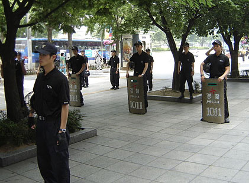

One of the greatest advantages to using tear gas is that, in general, it leads to quick submission and its effects are not long lasting. Less than 1% of people exposed to tear gas have effects severe enough to warrant medical care. People who do seek medical help from tear gas exposure usually have eye, airway, or skin complaints. There is no antidote for tear gas; therefore, patients can achieve relief only if their symptoms are treated.

Use of CS during warfare is prohibited under the terms of the 1997 Chemical Weapons Convention because its use could trigger retaliation with more harmful chemical agents such as nerve gas. Domestic use of CS by police is legal in most countries.